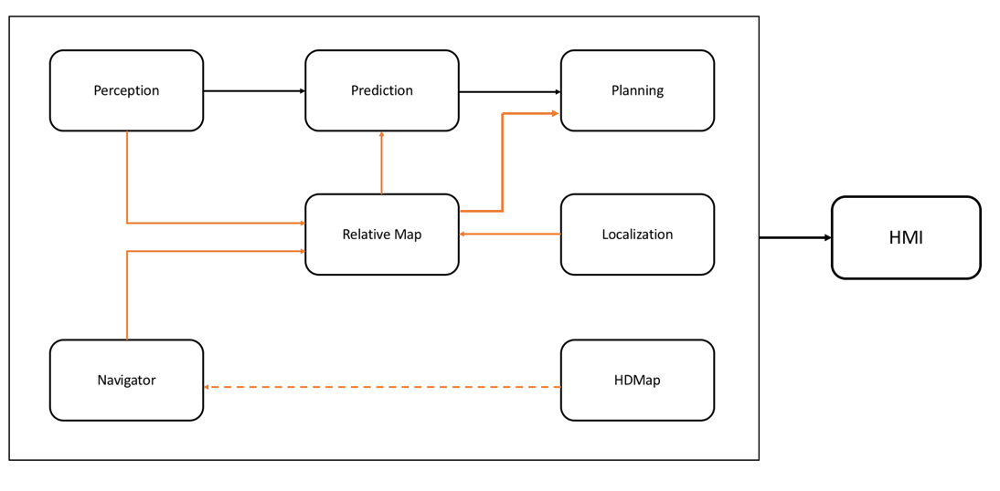
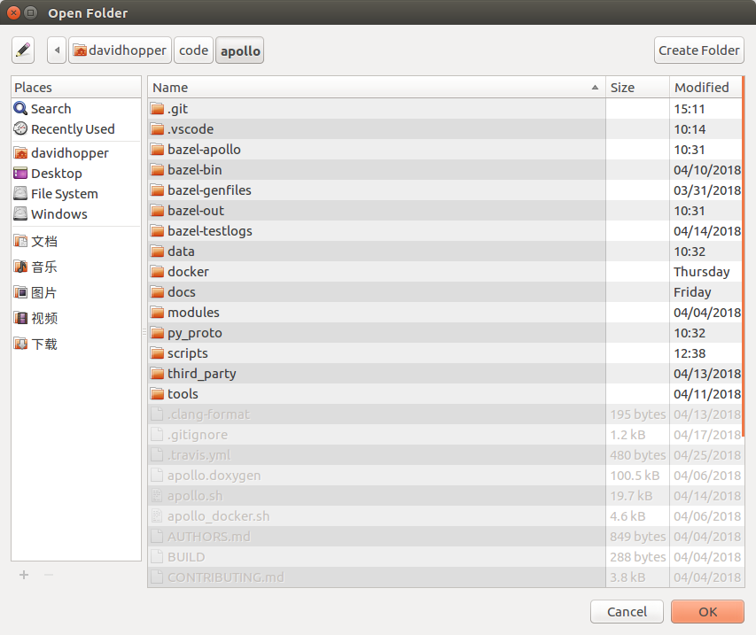
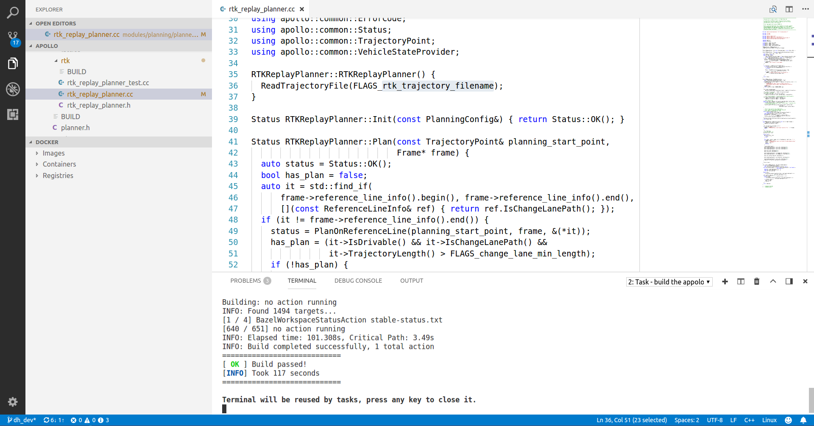

How to use Apollo 2.5 navigation mode¶
This article is translated by the Apollo community team.¶
Apollo is well received and highly commended by developers in the field of autonomous driving for its well-designed architecture, full functionality, robust open-source ecosystem, and standardized coding style. However, previous versions of Apollo had their perception, prediction, routing, and planning modules all heavily reliant on HDMaps, for which development was cumbersome and opaque. For many developers, this posed an insurmountable barrier. Given the inaccessibility of HDMaps, developers could only play demo data bag on Apollo’s simulation tools, rather than deploy the Apollo system on vehicles for road testing. This greatly undermined the usage scenarios of Apollo and hampered the development and growth of the Apollo community. Obviously, the Apollo team had been aware of this problem. With months of hard work, they released a new navigation mode in Apollo 2.5 based on a relative map. Leveraging navigation mode, developers could easily deploy Apollo for road testing on a real vehicle.
Relative map is the newest feature to be introduced in Apollo 2.5. From the architectural level, the relative map module is the middle layer linking the HDMap to the Perception module and the Planning module as seen in the image below. The relative map module generates real-time maps based on the vehicle’s coordinate system (the format is in the same format as HDMaps). The module also outputs reference lines for the Planning module to use. From the angle of developers, a navigation mode based on relative maps enables developers to implement real-vehicle road tests. As a result, barriers to development have been significantly reduced.

The basic idea behind the navigation mode is:
Record the driving path of a manually driven vehicle on a desired path
Use Apollo tools to process the original path and obtain a smoothed out path (navigation line). This path is then used to
Replace the global route given by the routing module
Serve as the reference line for the planning modulefor generating the relative map.
In addition, the path can also be used in combination with the HDMap to replace the lane reference line in the HDMap (by default, the HDMap uses the lane centerline as the reference. However, this method may not suit certain circumstances where using the vehicle’s actual navigation line instead could be a more effective solution).
A driver drives the vehicle to the starting point of a desired path, then selects the navigation mode and enables relevant modules in Dreamview. After the above configuration, the vehicle needs to be switched to autonomous driving status and run in this status.
While travelling in the autonomous mode, the perception module’s camera will dynamically detect obstacles and road boundaries, while the map module’s relative map sub-module generates a relative map in real time (using a relative coordinate system with the current position of the vehicle as the origin), based on the recorded path (navigation line) and the road boundaries. With the relative map created by the map module and obstacle information created by the perception module, the planning module will dynamically output a local driving path to the control module for execution.
At present, the navigation mode only supports single-lane driving. It can perform tasks such as acceleration and deceleration, car following, slowing down and stopping before obstacles, or nudge obstacles within the lane width. Subsequent versions will see further improvements to support multi-lane driving and traffic lights/signs detection.
This article fully explains the build of Apollo 2.5, navigation line data collection and production, front-end compilation and configuration of Dreamview, and navigation mode usage, etc. Hopefully this will bring convenience to developers when properly using Apollo 2.5.
1. Building the Apollo 2.5 environment¶
First, download the Apollo 2.5 source code from GitHub website. This can be done by either using git command or getting the compressed package directly from the web page. There are two options to build Apollo after downloading the source code to an appropriate directory: 1. in Visual Studio Code (recommended); 2. by using the command line. Of course, the common prerequisite is that Docker has already been successfully installed on your computer. You can use the script file install_docker.sh to install Docker firstly.
1.1 Build with the Visual Studio Code¶
Open Visual Studio Code and execute menu command File -> Open Folder. In the pop-up dialog, select a Apollo project source folder and click OK, as shown in the following figure:


Next, execute menu command Tasks -> Run Build Task or directly press Ctrl + Shift + B (shortcut keys which are the same as in Visual Studio and QT) to build a project. Docker will be launched when compiling if it has not yet been started. A superuser password needs to be entered in the terminal window at the bottom. After the command is executed, a display of Terminal will be reused by tasks, press any key to close it. in the terminal window at the bottom indicates that the build is successful. Keep good internet connection during the whole process, otherwise the dependencies cannot be downloaded. You may encounter some problems during the build. Solutions can be found in this blog post and the Help Doc on GitHub.

1.2 Build in a terminal¶
Press Ctrl + Alt + T to open a terminal and enter the following command to launch Docker:
cd your_apollo_project_root_dir
# if you access from mainland China, it’s better to add “-C” option, visit mirror servers in mainland China will enable the highest download speed
bash docker/scripts/dev_start.sh -C
Enter the following command to enter Docker:
bash docker/scripts/dev_into.sh
In Docker, execute the following command to build the Apollo project:
bash apollo.sh build
The steps are shown in the following figure:

1.3 Change the UTM area ID in Localization module¶
The default ID of the localization module in Apollo is the UTM coordinates of the US west coast. If you are in China, this ID must be changed. Outside of Docker, using vi or another text editor, open [your_apollo_root_dir]/modules/localization/conf/localization.conf, and change:
--local_utm_zone_id=10
We are using the UTM area ID of Changsha area, for UTM sub-areas in China, please go to this page)：
--local_utm_zone_id=49
Note: If the coordinates were not changed before recording data, they must not be changed when playing back data during offline testing. Changing the ID after recording will disturb navigation line locating!
3. Generation of navigation lines¶
Either create a navigation line on an in-car IPC, or other computers. In both situations, we assume: we are already in Docker (Step 1.2), we have imported the data bag under the /apollo/data/bag directory, and the name of the file is 2018-04-01-09-58-00.bag (which is not the name of the file in your computer, we are using it only as an example).
3.1 Extract raw data from the data bag¶
In Docker, enter the command to extract the data from the data bag:
cd /apollo/modules/tools/navigator
python extractor.py /apollo/data/bag/2018-04-01-09-58-00.bag
A raw data file path_2018-04-01-09-58-00.bag.txt will be generated under the current directory (assuming we are under /apollo/modules/tools/navigator)
To check the data, enter the following command:
python viewer_raw.py ./path_2018-04-01-09-58-00.bag.txt
And a figure like the image below, will be generated:

3.2 Smoothen the raw data¶
If the test drive was bumpy, the raw path data will not be smooth enough. It must be smoothed in Docker using the following command:
bash smooth.sh ./path_2018-04-01-09-58-00.bag.txt 200
Note: 200 is the smoothing length, which is usually 150-200. If this process failed, try to adjust this argument and smooth the data again.
To verify the smoothed result, use the following command:
python viewer_smooth.py ./path_2018-04-01-09-58-00.bag.txt ./path_2018-04-01-09-58-00.bag.txt.smoothed
The first argument ./path_2018-04-01-09-58-00.bag.txt is raw data, the second argument ./path_2018-04-01-09-58-00.bag.txt.smoothed is the smoothed result. A figure like below will be generated:

4. Dreamview frontend compilation and configuration¶
Dreamview frontend uses the Baidu Map by default. It can be changed to Google Maps by re-compiling frontend, as seen in the sub-sections below (Note: if you wish to continue with the default Map application, please ignore the sub-sections below):
4.2 Re-compile the Dreamview front end¶
As in Step 1.2, enter Docker and execute the following command to compile Dreamview Front End:
#Install Dreamview front end dependent package. Note: you only need to execute it once, not every time.
cd /apollo/modules/dreamview/frontend/
yarn install
# Compile Dreamview front end
cd /apollo
bash apollo.sh build_fe
You might encounter errors like this one below, during the process:
ERROR in ../~/css-loader!../~/sass-loader/lib/loader.js?{"includePaths":["./node_modules"]}!./styles/main.scss*
*Module build failed: Error: ENOENT: no such file or directory, scandir '/apollo/modules/dreamview/frontend/node_modules/node-sass/vendor'*
...
(The error continues, but we have the information we need to debug it)
This is because of built-in dependent package inconsistency, which can be resolved by executing the following command in Docker:
(Note: keep your internet connection steady, or you might not be able to download the dependent package again):
cd /apollo/modules/dreamview/frontend/
rm -rf node_modules
yarn install
cd /apollo
bash apollo.sh build_fe
5. Usage of the navigation mode¶
5.1. Open Dreamview and switch to the navigation mode¶
Enter Docker, open Dreamview and execute the following command:
cd your_apollo_project_root_dir
# If you haven’t opened Docker, do it first or ignore that step
bash docker/scripts/dev_start.sh -C
# Enter Docker
bash docker/scripts/dev_into.sh
# Start Dreamview and monitoring process
bash scripts/bootstrap.sh
For offline mock tests, loop the data bag recorded in Step 2 /apollo/data/bag/2018-04-01-09-58-00.bag (data recorded in my device). Please ignore this step for real vehicle commissioning.
# For offline mock tests, loop the data bag recorded in step 2. Please ignore this step for real vehicle commissioning.
rosbag play -l /apollo/data/bag/2018-04-01-09-58-00.bag
Open this website http://localhost:8888 in the browser (DO NOT use proxy), enter Dreamview interface, click on the dropdown box in the upper right, and select Navigation mode, as shown in the screenshot below:

5.2 Enable relevant modules in the navigation mode¶
Click on the Module Controller button in the toolbar on the left side of the Dreamview interface and enter the module controller page. For offline mock tests, select Relative Map, Navi Planning, and other modules as needed as shown in the screenshot below (the module that shows blank text is the Mobileye module, which will be visible only if the related hardware is installed and configured):

For real vehicle commissioning, all modules except Record Bag, Mobileye(if Mobileye hardware has not been installed, it will be shown as blank text) and Third Party Perception should be activated, as displayed in the next screenshot:

5.3 Send the navigation line data¶
In Docker, execute the following command to send the navigation line data made in step 3:
cd /apollo/modules/tools/navigator
python navigator.py ./path_2018-04-01-09-58-00.bag.txt.smoothed
The following screenshot shows the interface after Dreamview receives navigation line data during offline mock testing. You can see the Baidu Map interface in the upper left corner. Our navigation line is shown as red lines in the Baidu Map, and white lines in the main interface.

The next screenshot shows the interface after Dreamview receives navigation line data during real vehicle commissioning. You can see the Baidu Map interface in the upper left corner. Our navigation line is shown as red lines in Baidu Map, and yellow lines in the main interface.

A few tips to focus on:
If the navigation line is not displayed correctly in Dreamview interface, the reasons could be:
Navigation line data is not sent correctly - execute the sending command again to solve this problem
If Browser cache is inconsistent, press
Ctrl+RorF5to reload the page or clear the cacheIf the Dreamview back end service program is not executing correctly - restart the program in Docker, using:
# Stop Dreamview and monitoring process bash scripts/bootstrap.sh stop # Restart Dreamview and monitoring process bash scripts/bootstrap.sh
Every time the vehicle returns to the starting point, it is necessary to send the navigation line data again, whether it is the offline mock test or the vehicle commissioning.